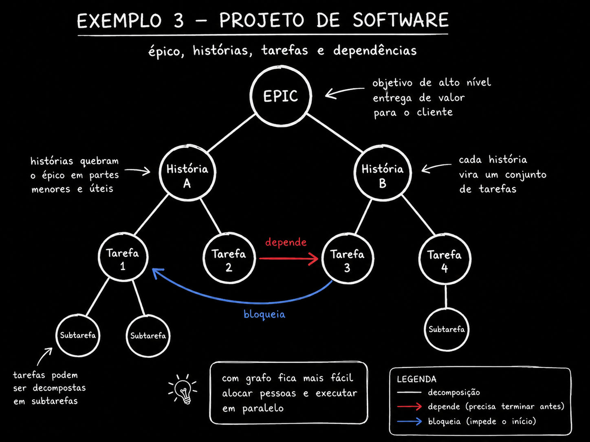

🌱 Modela el embudo como un grafo
Toma el embudo que ya tienes en mente: campaña, tráfico, landing, signup, activación, retención, LTV, churn. Cada uno se convierte en un en el — un estado por el que pasa el cliente. Cada flecha es la tasa de conversión entre un estado y el siguiente: qué porcentaje sale de un nodo y llega al siguiente.
🆕 ¿Nuevo aquí? Cuatro términos antes de seguir
- CAC (costo de adquisición de clientes): cuánto gastas, en promedio, para conseguir un cliente nuevo — suma lo que invertiste en la campaña y divídelo entre los clientes que llegaron.
- LTV (valor de vida del cliente): cuántos ingresos genera un cliente en total mientras sigue pagando.
- Activación: el momento en que el nuevo cliente usa el producto de verdad por primera vez: no solo se registró, sino que hizo aquello que demuestra el valor.
- Retención / churn: la retención es la proporción de clientes que permanece; el churn es lo opuesto — la proporción que cancela o desaparece.
El simple ejercicio de escribir esta fila de nodos suele dejar al descubierto un problema: alguien siempre se da cuenta de que nunca midió la tasa entre dos etapas específicas, normalmente entre "signup" y "activación", que es donde la mayoría de los productos pierde usuarios sin darse cuenta. Nombrar el nodo te obliga a admitir que ese número no existe.
![Diagrama del embudo de crecimiento, en estilo de pizarra: el presupuesto lleva a la campaña, que lleva al tráfico, que lleva a la landing, que lleva al signup, que lleva a la activación, que lleva a la retención, que lleva al LTV. El churn sale de la retención. El CAC está conectado con la activación. Una línea punteada conecta LTV y CAC con la etiqueta LTV dividido por CAC mayor que 3. Un loop rojo vuelve desde LTV/churn hasta la campaña, con la etiqueta una mejor campaña lleva a menor churn y a mayor LTV.](../../../assets/img/ex2-funil-crescimento.png)
Conceptos clave
Etapa por la que pasa el cliente
Conversión entre dos estados
Aparece una etapa sin tasa medida
El embudo sigue siendo un pipeline
🔄 Marca las aristas de retroalimentación
Dos aristas vuelven al inicio del embudo, y son las que hacen que el sistema tenga un comportamiento propio. La primera: el cliente que cancela (churn) se convierte en dato que cambia la campaña — revisas quién canceló y ajustas a quién le haces publicidad. La segunda: el CAC alimenta la decisión sobre cuánto presupuesto recibe la campaña en el siguiente ciclo.
🆕 ¿Nuevo aquí? Retroalimentación
Retroalimentación (feedback): cuando la salida de un proceso vuelve a influir en su propia entrada. En el grafo, es una arista que sale más adelante y vuelve a un nodo anterior — el mismo ciclo que ya viste en la Trilha 1, solo que ahora con una métrica de negocio en cada extremo.
🎯 Por qué esto importa
Es este ciclo el que hace que el sistema tenga un comportamiento propio — y es exactamente lo que un agente miope, que mira una sola métrica (por ejemplo, "bajar el CAC"), no ve. Recorta el presupuesto de la campaña, el CAC baja en el informe y nadie se da cuenta de que el público más barato también tiene más churn — el LTV se desploma tres meses después.
✓ Retroalimentación bien definida
- ✓"El churn actualiza el perfil de a quién NO anunciarle"
- ✓"El CAC del mes alimenta el límite de presupuesto del siguiente"
- ✓La arista tiene una etiqueta que indica QUÉ dato vuelve y DÓNDE se incorpora
✗ Retroalimentación ignorada
- ✗Dibujar el embudo solo como una fila recta, desde la campaña hasta el LTV
- ✗Optimizar el CAC sin comprobar qué pasa con el churn/LTV
- ✗Tratar cada métrica como si fuera independiente de las demás
Conceptos clave
Se convierte en dato para la campaña
Se convierte en dato para el presupuesto
El ciclo es lo que le da vida al sistema
Solo ve lo que le señalaste
⚖️ Declara las restricciones entre métricas
"LTV dividido por CAC debe ser mayor que 3" no es una métrica: es una relación entre dos. No puedes escribir esto como un número que sube o baja por sí solo: es una comparación que solo existe cuando ambos nodos están en el mismo grafo, con una arista que declara la regla entre ellos.
Un loop con un único objetivo — "bajar el CAC", "subir la conversión" — ni siquiera puede expresar más respetes esa restricción, mejor. Es el argumento más concreto a favor de modelar un negocio como un grafo: la restricción entre métricas solo tiene sentido cuando las dos métricas son nodos visibles al mismo tiempo, unidos por una arista que contiene la regla.
Qué observar: la línea punteada del medio no es una arista de flujo: no representa "el cliente pasa de aquí para allá". Representa una regla que debe seguir siendo cierta. La flecha roja de abajo muestra el error clásico: el CAC bajó (bien en el informe aislado), pero la relación con el LTV se rompió porque nadie miró ambos juntos.
📊 Otras restricciones comunes del negocio
- Período de recuperación de la inversión — el tiempo que tarda el CAC en amortizarse debe ser menor que el efectivo disponible
- Retención mínima — churn mensual por debajo de X% para que el LTV proyectado alcance la meta
- Margen sobre CAC — la receta del primer mes debe cubrir una fracción del CAC; de lo contrario, el flujo de caja se agota antes de que se concrete el LTV
Conceptos clave
Y una relación entre dos
Sin que ambos estén visibles, no se puede
Bucle de 1 métrica no expresada
Un número sube, el par se rompe
🌳 Distingue entre descomponer, depender y bloquear
En el backlog del equipo hay tres tipos distintos de aristas, y la mayoría de las herramientas solo muestra una de ellas de verdad. Descomposición: épica contiene historia, que contiene tarea. Dependencia: tiene que terminar antes. Bloqueo: impide que otra cosa empiece hasta que se resuelva.
Solo la primera es una jerarquía de verdad: cada tarea tiene un solo padre y nada regresa. Las otras dos convierten el árbol en un grafo: una tarea puede depender de otra de un épico completamente diferente, y un bloqueo puede conectar elementos que no tienen ninguna relación de parentesco en el organigrama del backlog.
🆕 ¿Nuevo aquí? Arista tipada
Arista tipada: una arista que lleva una etiqueta que indica QUÉ TIPO de relación representa — no es solo «A se conecta con B», sino «A depende de B" o "A bloquea B". Sin el tipo, el grafo se convierte en una sopa de líneas sin significado.

| Tipo de arista | Lo que significa | Efecto en el paralelismo |
|---|---|---|
| Descompone | La épica contiene historias y la historia contiene tareas: jerarquía, un solo padre | Ninguno: es solo organización, no bloquea el orden de ejecución |
| Depende de | Necesita terminar antes de empezar el siguiente | Reduce — la tarea dependiente solo se libera después |
| Bloquea | Impide iniciar otra hasta que se resuelva, aunque no haya jerarquía entre ellas | Reduce y oculta — suele atravesar épicas, es lo más difícil de detectar |
Conceptos clave
Descompone, depende, bloquea
La descomposición tiene un único padre
Cruzan diferentes épicas
La herramienta solo dibuja la jerarquía
📐 Calcula cuántos frentes avanzan ahora
Con las dependencias y los bloqueos marcados, se puede contar la anchura del nivel: cuántas tareas están listas al mismo tiempo, sin ninguna dependencia pendiente. Así es como se dimensiona de verdad un equipo de personas o agentes, en vez de adivinar «voy a poner cinco agentes en esto».
🆕 ¿Nuevo aquí? Ancho del nivel y cuello de botella
- Anchura del nivel: cuántas tareas quedan habilitadas al mismo tiempo, en un mismo «nivel» del grafo de dependencias.
- Cuello de botella: el punto del sistema que limita cuánto puede avanzar el resto, aunque todo lo demás tenga capacidad de sobra.
Qué observar: el ancho de cada franja. El nivel 1 libera dos tareas; el nivel 2, tres: hasta aquí, cinco agentes o cinco personas caben bien. Pero el nivel 3 solo libera una. Si pusiste a cinco agentes a trabajar y solo hay una tarea disponible en ese nivel, los otros cuatro se quedarán parados o empezarán a estorbarse entre sí.
⚠️ Atención: la capacidad sobrante no es capacidad utilizable
Tener cinco agentes disponibles no significa que cinco tareas vayan a avanzar en paralelo. El grafo de dependencias es quien decide el ancho real de cada momento, no la cantidad de personas o agentes que contrataste. Contar el ancho del nivel antes asignar evita poner recursos donde no hay trabajo que hacer.
Conceptos clave
Tareas listas al mismo tiempo
Mejor que adivinar un número
El nivel estrecho bloquea el resto
Que sobren agentes no resuelve el cuello de botella
🤖 Dale el grafo al agente para que decida
Con el grafo del negocio o del backlog escrito, un agente puede proponer una asignación, señalar el cuello de botella y simular el efecto secundario de un cambio: «si duplico el presupuesto de la campaña, ¿qué pasa con el abandono y el LTV?». Sin el grafo, solo opina sobre la métrica que mencionaste y vuelve a ser el bucle miope del inicio del curso.
🧪 Prompt listo: convierte el negocio o backlog en un grafo tipado
Objetivo: darle a Claude Code la descripción de tu embudo o la exportación de tu backlog y recibir un grafo en JSON con aristas tipadas, además de los niveles de paralelismo y el cuello de botella.
Voce vai modelar <o funil de crescimento do meu produto> (ou: <o export do meu
backlog em CSV/JSON>) como um grafo. Regras:
1. Cada etapa/tarefa vira um NO com id curto.
2. Para negocio: arestas tipadas em "converte_em" (fluxo normal), "realimenta"
(volta pra um no anterior, ex: churn -> campanha) e "restringe" (relacao
entre duas metricas, ex: LTV/CAC > 3 — nao e fluxo, e regra).
3. Para backlog: arestas tipadas em "decompoe" (hierarquia, um pai so),
"depende_de" (precisa terminar antes) e "bloqueia" (impede inicio,
pode cruzar epicos diferentes).
4. Devolva em JSON: { "nos": [...], "arestas": [{"de","para","tipo"}] }.
5. Calcule e devolva tambem "niveis_paralelismo": lista de niveis com os
nos liberados em cada um (sem dependencia pendente), e "gargalo": o
nivel com menor largura.
Dados de entrada: <cole aqui a descricao do negocio ou o export do backlog>
Cómo verificar: (1) si el JSON no tiene NINGUNA arista "retroalimenta" (negocio) o "bloquea" (backlog), el modelo dibujó un pipeline recto y no un grafo: pídeselo de nuevo, insistiendo en los ciclos y las relaciones cruzadas. (2) Comprueba si el "cuello de botella" señalado coincide con el nivel que el equipo ya percibe en la práctica; si el modelo señala un cuello de botella que nadie reconoce, probablemente el grafo tiene una dependencia incorrecta.
💡 Lo que el grafo consigue y la métrica aislada no
Un número aislado solo responde «¿subió o bajó?». Un grafo responde «¿qué más se mueve cuando cambio esto?»; esa es la pregunta que realmente determina la asignación, el presupuesto y las prioridades. Es el mismo argumento de la Ruta 3: el grafo no es una moda, es el formato adecuado cuando la pregunta involucra más de una cosa al mismo tiempo.
Conceptos clave
Asignación, cuello de botella, simulación
Solo habla de la métrica mencionada
Aristas con nombre, no solo líneas
Volver a la frase ancla inicial
Verificación rápida (no bloquea nada): le pediste al modelo que dibujara el grafo de tu embudo de crecimiento y te devolvió solo una fila recta, campaña hasta LTV, sin ninguna flecha de retorno. ¿Qué hacer?
📌 Resumen del módulo
Próximo módulo:
5.3 — Biblioteca de prompts: diseñar el grafo a partir de un proceso, convertirlo en un script ejecutable, auditar un grafo, encontrar colisiones entre loops.